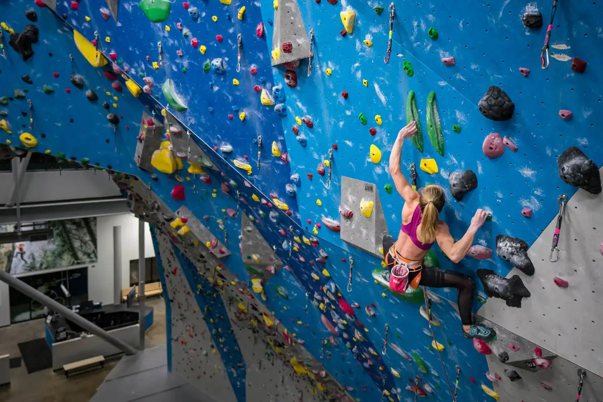
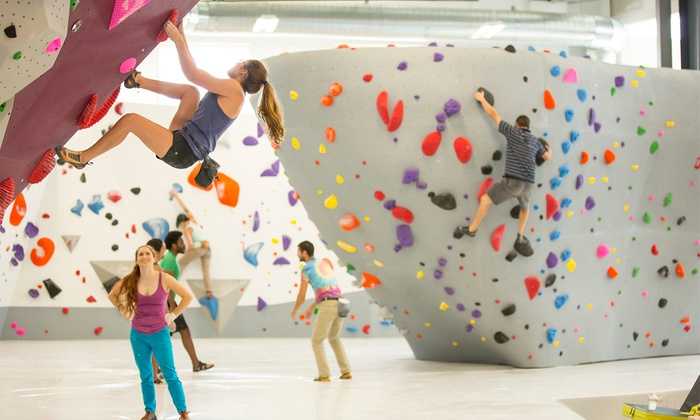
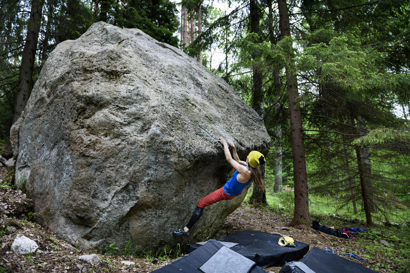
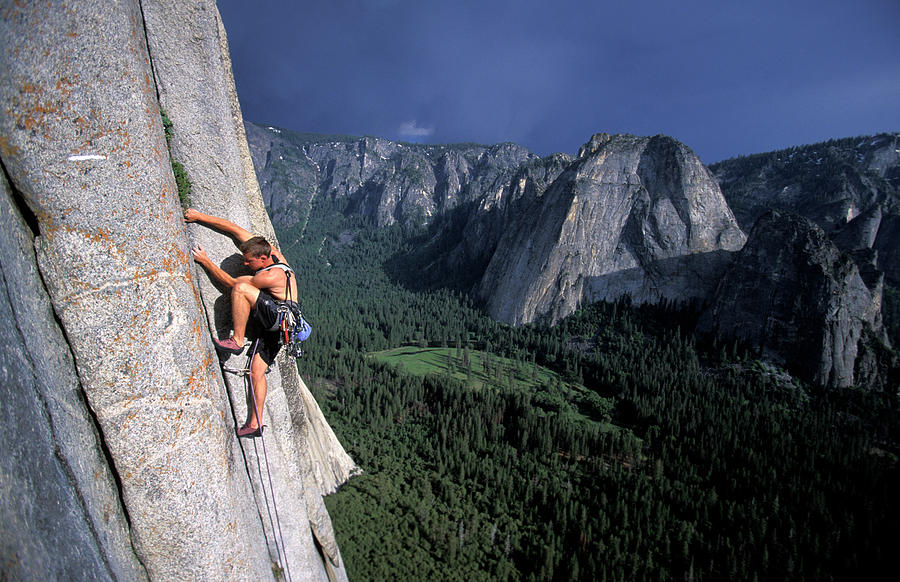
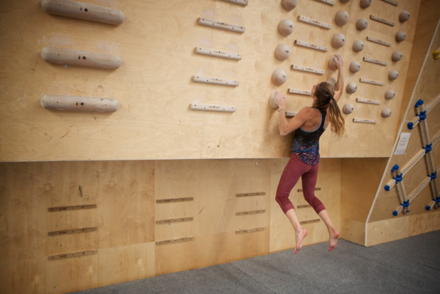
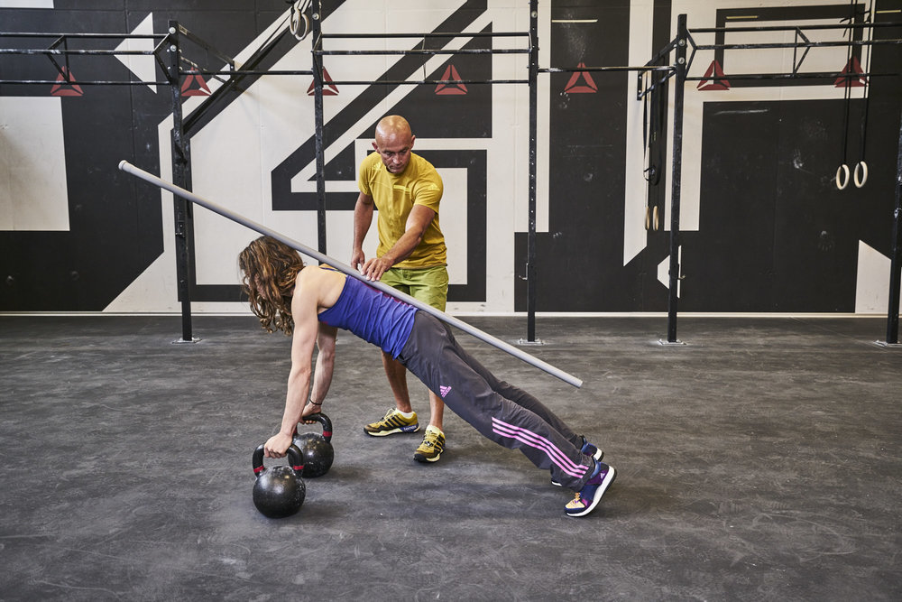

Ways to practice climbing
Indoor climbing
Indoor climbing gyms offer a controlled environment where you can practice your climbing
skills and techniques. They often have a variety of climbing routes, called "problems,"
that are graded by difficulty. Indoor climbing gyms are a great place to start if you are
new to climbing, as they offer a safe and supportive environment for learning and improving.


Outdoor climbing
If you live near outdoor climbing areas, you can also practice your climbing skills by tackling
routes in nature. Outdoor climbing can be more challenging than indoor climbing due to the changing
weather and rock conditions, but it can also be more rewarding. It's important to have the proper gear
and to follow safety guidelines when climbing outdoors.


Climbing Training
In addition to climbing, you can also practice specific skills and techniques that will help you
improve your climbing. This can include exercises like hangboarding (grip strength training), fingerboarding
(finger strength training), and campus boarding (upper body strength training). You can also practice techniques
like footwork, body positioning, and dynamic movement by doing drills and exercises on a climbing wall or hangboard.

